Location saisonnière Nice
Appartement vue mer panoramique sur la Colline de Bellet
Appartement entier haut de villa à Nice
avec vue panoramique sur la Baie des Anges
& les montagnes environnantes
Appartement idéal pour les familles avec ou sans enfants ou entre amis


Situé sur les collines de Nice, ce superbe appartement de 73 m2 au 1er étage de la villa des propriétaires, vous offrira une vue panoramique exceptionnelle sur la baie des Anges et les montagnes environnantes, durant votre location saisonnière à Nice.
L’appartement, très lumineux avec son exposition sud, vous offrira du soleil, du matin jusqu’au soir.
D’une capacité d’accueil de 6 personnes, il est entièrement rénové et équipé, pour un séjour des plus confortable et inoubliable.
Le logement
Bienvenue dans l’appartement de vos rêves avec vue panoramique sur la baie des Anges et les montagnes environnantes.
D’une capacité d’accueil de 6 personnes, idéal pour une famille ou entre amis, l’appartement est traversant, lumineux avec climatisation et double vitrage pour passer un séjour en toute tranquillité.
Vous y trouverez tout ce qu’il faut pour vivre des vacances parfaites avec un salon lumineux donnant sur 2 terrasses orientées Sud Est et Sud Ouest, une cuisine ouverte toute équipée, une chambre parentale avec lit double, grand placard de rangement et sa salle de bain privative avec douche à l’italienne, une seconde chambre avec 2 lits simples et un grand placard, une salle de bain indépendante avec douche à l’italienne et toilette et un toilette indépendant.
Dans le salon, un canapé-lit confortable pourra accueillir 2 couchages d’appoint supplémentaires.
Profitez de la belle terrasse principale à ciel ouvert, aménagée avec un salon de jardin qui vous permettra de vous prélasser et de bronzer autour d’un bon rosé, tout en admirant la Belle Bleue et ses bateaux qui naviguent.
Savourez un bon moment en famille ou entre amis depuis la terrasse attenante à la cuisine, sa table à rallonge vous permettra d’accueillir 6 personnes et vous serez à l’abri du soleil grâce au store électrique.
La véranda à l’entrée est équipée d’un lave-linge et d’un sèche-linge.
Vous pourrez également profiter de la piscine en accès partagé, tout en contemplant le potager et ses herbes aromatiques.
Où dormirez-vous ?
Chambre 1 parentale
- Lit double 160 x 200 cm
- Salle de bain privative avec douche à l'italienne + lavabo
- Double placard
- Climatisation réversible
- Volet roulant électrique
Chambre 2
- Au choix 1 Lit double 160 x 200 cm
ou 2 lits simples 80 x 200 cm - Double placard
- Climatisation réversible
- Volet roulant électrique
Salon
- 1 canapé convertible
- Lit double 140 x 200 cm
- Climatisation réversible
- Volets roulants électriques
Vous aimez cuisiner ?
Profitez d'une cuisine entièrement équipée et conviviale
Îlot avec plaque à induction + 3 tabourets haut
Profitez d'un moment convivial autour de l'îlot de la cuisine tout en préparant un bon repas en famille ou entre amis.
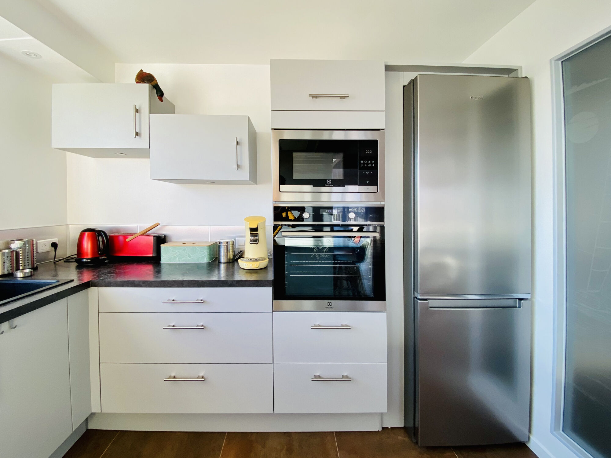
Appareils ménagers de dernière génération
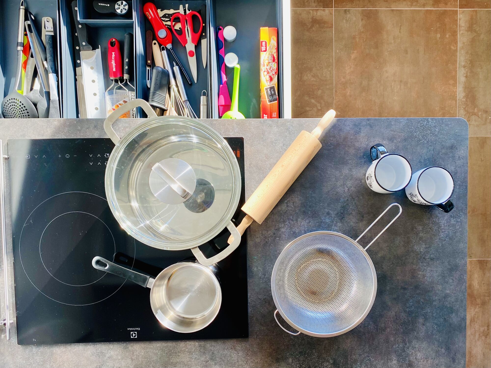
Ustensiles de cuisine
Marmite, casseroles, poêles, écumoire, rouleau à pâtisserie...
La cuisine est entièrement équipée, et vous y trouverez forcément votre bonheur pour confectionner vos recettes.
Ce que propose l'appartement
Chauffage & Climatisation
- Climatisation réversibleChambres et salon
- Chauffage au solSalle de bain, couloir côté chambres
Chambres & linge
- Draps
- Couettes d'été et couettes d'hiver
- Équipements de baseServiettes, draps et papier toilette
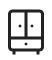
Espaces de rangement pour les vêtementsGrands placards dans les chambres et pour le salon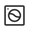
Lave-linge- Sèche-linge
- Fer à repasser vapeur
- Étendoir à linge et cintres
Cuisine & Salle à manger
- CuisineEspace où les voyageurs peuvent cuisiner
- Plaques à induction
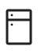
Réfrigérateur + congélateurEt un mini réfrigérateur- Four
- Four à micro-ondes
- Lave-vaisselle
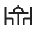
Table à manger- Équipement de cuisine completCasseroles et poêles, ustensiles, huile, sel, poivre · Bols, tasses, assiettes, couverts
- Verres à vin
- Bouilloire électrique
- Cafetière
- Grille-pain
Salle de bain
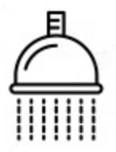
Douche à l'italienne- Sèche cheveux
- ServiettesServiettes de bain, serviettes de plage
Famille avec bébé (sur demande)
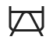
Lit parapluie- Cache-prises
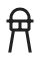
Chaise haute
Divertissements
- Connexion Internet Wifi haut débit
- TV avec abonnement standard
- Table de tennis de table
Sécurité à la maison
- Détecteur de fumée
- Kit de premiers secours
Extérieurs
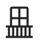
2 terrasses privées- Espace repas en plein airMobilier d'extérieur
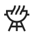
Plancha
Parking & Piscine
- Parking privé sécurisé
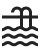
Piscine partagée sécurisée
Vues
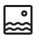
Vue sur la baie de Nice- Vue sur la ville de Nice
- Vue sur les montagnes de l'arrière-pays niçois
- Vue sur le jardin
Délais de réponse rapide
Bonne communication
Haute Saison · Juillet-Août
Location à la semaine du samedi au samedi
Moyenne & Basse Saison
Location 4 jours minimum
Entrée 17h-19h · Sortie 11h
Remise des clés en main propre
Ménage
Partez l'esprit tranquille et prenez l'option ménage fin de séjour
Nos plus
Parking privé
Garez-vous dans l'enceinte de la villa, parking privatif et sécurisé
Vue panoramique
Admirez la Grande Bleue depuis la terrasse principale avec une vue imprenable
2 Terrasses
Profitez de la vue et des espaces extérieurs avec les 2 terrasses exposées Sud Est et Sud Ouest
Piscine
Piquez une tête dans la piscine pour vous rafraîchir (Accès partagé avec les propriétaires)
Wifi gratuit
Bénéficiez de la fibre et d'un accès internet à très haut débit
Ménage
Service de ménage optionnel pendant le séjour ou en fin de séjour
Bébé
Équipement bébé disponible à la demande (lit parapluie, chaise haute, cache-prises)
Ateliers Bien être
Profitez d'un massage bien être à domicile ou d'une séance de yoga privée, sur demande
Expérience découverte
Découvrez les spécialités niçoises et d'autres recettes lors d'un atelier cuisine dédié à notre belle région
Description du quartier
L’appartement est situé sur les collines de Bellet dans un quartier résidentiel.
A moins de 5 min en voiture, vous avez le quartier de Saint-Antoine-de-Ginestière, où vous trouverez des commerces de proximité (boulangerie, pharmacie, presse, supérette, ...).
A 7 min en voiture, vous avez une supérette SPAR en direction de Saint-Roman-de-Bellet.
A 2 min en voiture au rond-point de Canta Galet, vous trouverez un primeur local avec les fruits et légumes de saison ainsi qu'une rôtisserie et juste à côté, la pizzeria-restaurant La Provence.
A 5 min en voiture de la maison, en bas de la colline, vous avez tous les commerces, boulangerie, boucherie, primeur, coiffeur, supermarché.... ainsi que l'accès aux transports en commun, Tram et Bus.
La plage se trouve à 7 min en voiture et 20 min à pied, bonne balade !
Nice et ses atouts
L’appartement est situé sur les collines de Bellet où sont produits les vins AOC & AOP de Bellet - Rouge, Blanc & Rosé, allez visiter les vignobles et terminez par une petite dégustation.
Venez découvrir notre magnifique ville de Nice avec le Vieux-Nice, on y trouve des bâtiments d'époques au style niçois, un quartier aux mille et un artisans, avec un concentré de bons restaurants à proximité, le Cours Saleya, la Place Masséna à quelques mètres ainsi que la Colline du Château et sa vue imprenable sur le Port de Nice et la Baie des Anges.
Longez la Promenade des Anglais et admirez la Belle bleue et ses bateaux.
N’hésitez pas à découvrir aussi les alentours avec le village perché d’Eze, Monaco et son Palais Princier, Villefranche-sur-mer, Cannes avec son mythique Festival du Film et tant d’autres petits bijoux de la Côte d’Azur.
Se déplacer
Vous avez la possibilité de prendre le bus des collines n°61 à 50m de l'appartement, pour rejoindre le centre-ville ou bien vous êtes à 20 min à pied par les chemins de traverses, de la ligne de Tram qui vous emmènera découvrir notre magnifique ville.
Nous sommes situés à 5 min en voiture des commerces les plus proches.
Numéro d'enregistrement
06088017951MX